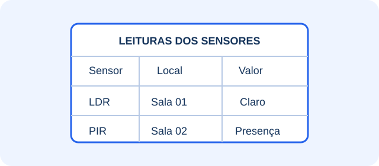
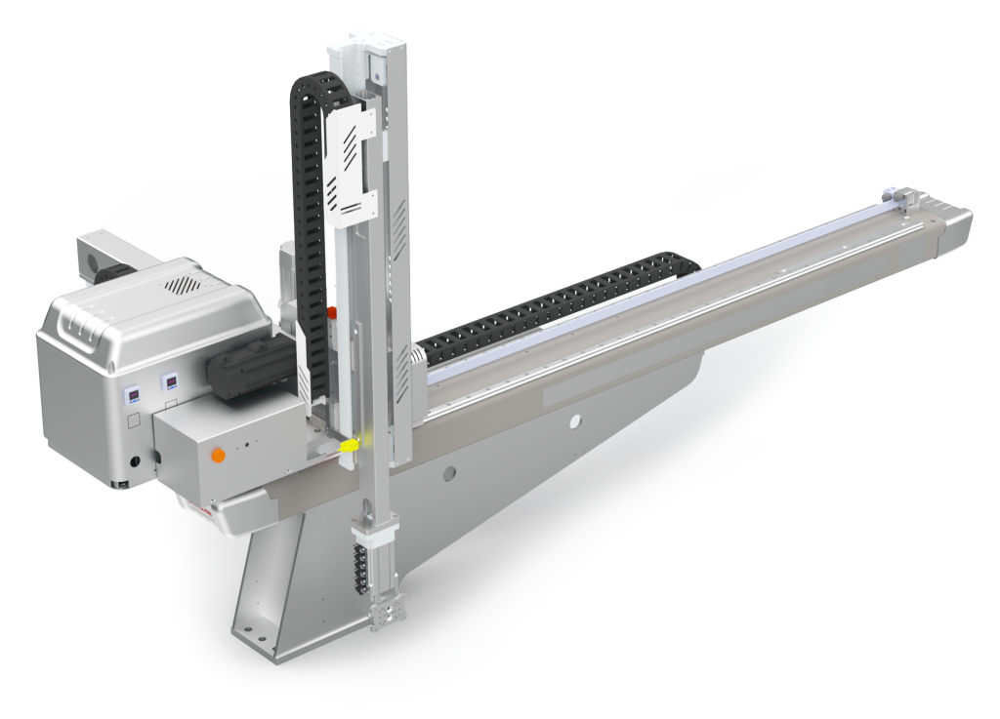
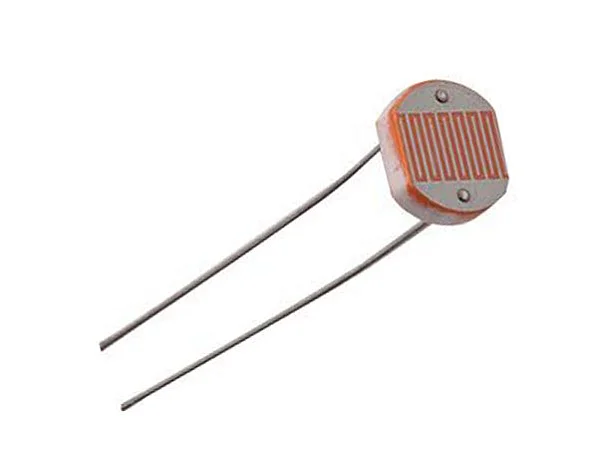
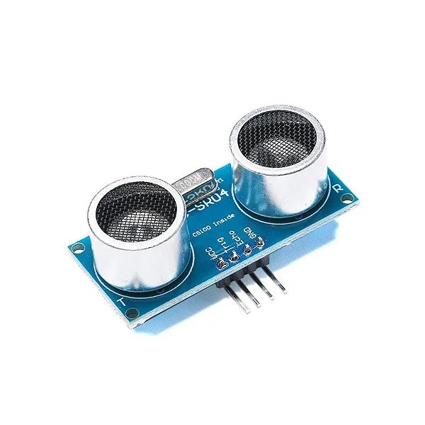
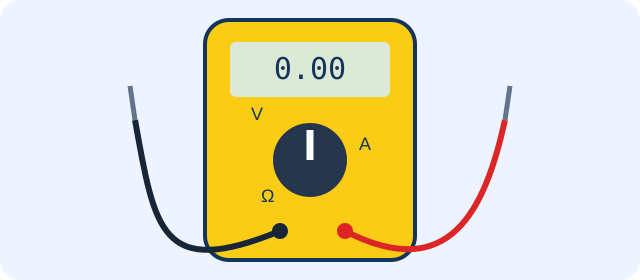
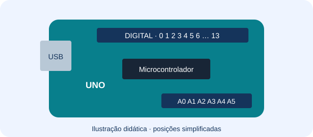
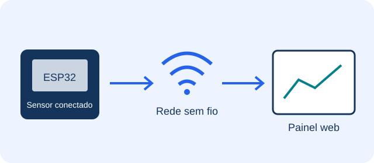

Escolha uma alternativa por rodada e confirme sua resposta. Acerte as 11 para chegar ao milhão fictício. Se errar, veja a explicação e tente novamente.
Ajudas: 50/50 e Dica, uma vez cada por partida. Sem tempo limite. Os valores são apenas parte do jogo.
Banco de dados
Modelos de banco de dados
Uma equipe vai representar as entidades do sistema, organizar tabelas e relacionamentos e, por fim, definir a implementação no SGBD. Quais modelos correspondem, nessa ordem, a essas etapas?

Ilustração didática.
O conceitual representa as entidades e relações do negócio. O lógico organiza tabelas e chaves. O físico define a implementação no SGBD, incluindo tipos de dados específicos e índices.
Robôs industriais
Movimento em três direções
Uma máquina movimenta sua ferramenta em linhas retas nos eixos X, Y e Z. Qual robô do site usa essa estrutura?

Observe o componente usado nesta questão.
O cartesiano se movimenta por eixos lineares X, Y e Z. Os outros modelos citados também utilizam movimentos de rotação.
Sensores
Sensor de luminosidade
Uma escola quer acender a iluminação quando o ambiente escurece. Qual sensor do site permite identificar essa mudança?

Observe o componente usado nesta questão.
O LDR responde à luminosidade. O PIR detecta movimento; o DHT11 mede temperatura e umidade; o HC-SR04 mede distância.
Sensores
Ajuda para estacionar
No estacionamento inteligente do site, um sensor identifica se o carro está perto de um obstáculo. O que o HC-SR04 mede nessa aplicação?

Observe o componente usado nesta questão.
O HC-SR04 usa ultrassom para medir distância. Assim, o sistema pode avisar quando um objeto está próximo.
Multímetro
Conferindo a alimentação
Um aluno quer verificar a tensão de uma pilha com um multímetro. Qual função ele deve selecionar?

Ilustração didática.
Pilhas fornecem tensão contínua. A função V DC mede essa tensão; A mede corrente e Ω mede resistência. V AC é para tensão alternada.
Arduino
Lendo um sensor
Um sensor fornece um sinal analógico que varia conforme a luz. No Arduino Uno, qual destes pinos pode ser usado para ler esse sinal?

Ilustração didática.
A0 é uma entrada analógica. GND é a referência do circuito, 5V fornece alimentação e RESET reinicia a placa.
Arduino
Entrada ou saída?
Um LED está ligado corretamente ao pino 9 do Arduino, com resistor. Qual comando configura esse pino para enviar o sinal que controla o LED?
Ilustração didática.
OUTPUT configura o pino como saída. INPUT e INPUT_PULLUP configuram entradas; digitalRead lê o estado de um pino.
ESP32
Conexão com a rede
Um ESP32 precisa enviar leituras de temperatura pela rede sem fio da escola. Qual recurso da placa permite essa conexão?

Ilustração didática.
O Wi-Fi conecta o ESP32 à rede sem fio da escola. Bluetooth usa outra forma de comunicação, USB exige cabo e a entrada analógica serve para ler sinais.